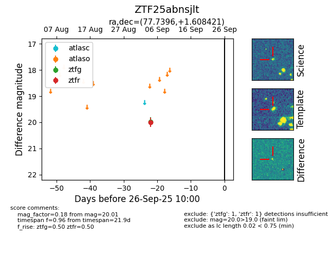

FINK: ZTF25abnsjlt
Lasair: ZTF25abnsjlt
ALeRCE: ZTF25abnsjlt
ZTF25abnsjlt (ztf,fink)
equatorial (ra, dec) = (77.7396,+1.60842)
galactic (l, b) = (199.3608,-21.39919)

last ztfg=19.98, ztfr=20.01
1 ztfg, 1 ztfr detections